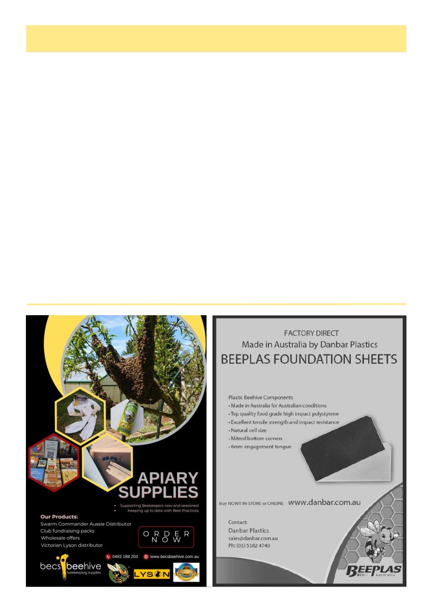

June 2026
17
Facebook Roundup, May 2026, cont’d
Please prepare your business, your bees, and your
people.
The commercial beekeeping industry is under pres-
sure - and we need to support one another through what
may be ahead.2
One of my biggest fears for the Australian beekeep-
ing industry is not just losing bees - it‘s losing the peo-
ple.
Some of the older commercial beekeepers in our
industry carry decades of knowledge, experience and
practical skills that cannot be learned from a textbook, a
Facebook group or a quick online search.
They have lived through droughts, floods, fires,
changing seasons, biosecurity threats, market pressures
and the constant challenge of keeping bees alive.
They know country, flowering patterns, bee behav-
iour, honey flows, pollination logistics and how to sur-
vive the hard years.
That knowledge matters.
If commercial beekeeping continues to become fi-
nancially unsustainable, if stress, losses and pressure
continue to push people out, we risk losing generations
of experience overnight. And once that knowledge dis-
appears, we may never get it back.
At the same time, we desperately need younger peo-
ple entering this industry.
We need young commercial beekeepers willing to
learn, adapt and carry this knowledge forward. But
how do we expect the next generation to step in when
many are watching businesses struggle, hives die, costs
rise and families fight just to survive?
Commercial beekeeping is not just about honey. It
is about pollination, food security, agriculture and pro-
tecting an industry that quietly supports so much of
Australia.
If we don‘t support commercial beekeepers now -
old and young - we risk losing not only an industry, but
the experience, resilience and future generations needed
to keep it alive. 3
Anita Long, founder of Australian Youth Beekeep-
ing, May 28th
The future of beekeeping is in our hands, let‘s not
drop the ball!
Min has opened up a great discussion on legacy,
succession and ultimately the concern for our beekeep-
ing industry future. Discussions that need to happen
now and at all levels of our industry.
We need to be careful not to frame the future of bee-
keeping only through loss.
Yes, we are at a critical point. Australia is facing
challenges that have already played out in other parts of
the world. Declining beekeeper numbers, financial
pressure, pests, diseases, biosecurity threats, low honey
(Continued from page 16)
(Continued on page 18)